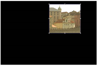
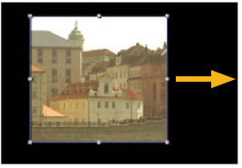

到 作物 帧是为了切掉图像区域中不需要的部分。
|  | |
| 原始图像。 | 裁剪图像。 |
| 1。 | 单击 变换 > 作物 在脚本中的适当位置插入裁剪节点。 |
| 2. | 将查看器连接到裁剪节点的输出，以便您可以看到更改的效果。 |
| 3. | 定义裁剪边界: |
• 在查看器中，拖动框架的任何一侧以重新定位它。

• 或者，在裁剪属性面板中，增加或减少 盒子 字段 ( x 代表左侧, y 对于底部, r 对于右侧，和 t 顶部)。
| 4. | 要用黑色填充裁剪部分，请检查 黑色外面 。要通过扩展图像的边缘来填充裁剪部分，请取消选中 黑色外面 。要调整图像输出格式以匹配裁剪的图像，请选中 重新格式化 . |
| 5. | 如果你想点缀裁剪部分的边缘，增加 柔软 字段。 |
|
|